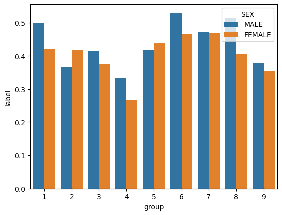

Performing a bias audit on algorithm fit using folktables dataset
Author
James Cummings
Published
March 4, 2025
Abstract
In this blog post, a Machine Learning Model is trained, using the American Community’s Public Use Microdata Sample data, to predict employment status of individuals using features other than race. A bias audit is then performed to evaluate if the model exhibits racial bias. In our bias audit, we prove that proxies are leading to individuals from specific racial categories being treated very differently with regards to error rate balance and calibration. This, and the implications with regards to our model, are discussed further in the final discussion.
Descriptive Analysis
Loading the Data
Download the data from the PUMAs fataset for the survey from 2018, at the individual level, and for the state of California.
from folktables import ACSDataSource, ACSEmployment, BasicProblem, adult_filterimport pandas as pdimport numpy as npSTATE ="CA"data_source = ACSDataSource(survey_year='2018', horizon='1-Year', survey='person')acs_data = data_source.get_data(states=[STATE], download=True)acs_data.head()
RT
SERIALNO
DIVISION
SPORDER
PUMA
REGION
ST
ADJINC
PWGTP
AGEP
...
PWGTP71
PWGTP72
PWGTP73
PWGTP74
PWGTP75
PWGTP76
PWGTP77
PWGTP78
PWGTP79
PWGTP80
0
P
2018GQ0000004
9
1
3701
4
6
1013097
32
30
...
34
60
60
7
8
59
33
8
58
32
1
P
2018GQ0000013
9
1
7306
4
6
1013097
45
18
...
0
0
0
91
46
46
0
89
45
0
2
P
2018GQ0000016
9
1
3755
4
6
1013097
109
69
...
105
232
226
110
114
217
2
111
2
106
3
P
2018GQ0000020
9
1
7319
4
6
1013097
34
25
...
67
0
34
34
69
0
34
35
0
0
4
P
2018GQ0000027
9
1
6511
4
6
1013097
46
31
...
47
81
10
11
79
47
44
81
47
10
5 rows × 286 columns
Let’s limit the scope of features which are relevant to our problem:
RAC1P is our data variable for race, and so that should be excluded from our set of predictor variables. ESR is our target variable for employment status. Let’s make a subset of features excluding these:
features_to_use = [f for f in possible_features if f notin ["ESR", "RAC1P"]]
Now we can construct a BasicProblem around our dataset and these different sets of features we have created. This problem defines our target (employment status) by transforming it from a categorical variable to a dichotemus one that is 1 if the individual is employed, and 0 for all other categories of employment and unemployment. It defines our grouping variable as the race of the individual (RAC1P).
The number of employed individuals who filled out the survey, based on racial category, are as follows: White: 85,639 Black/African American: 5,702 American Indian: 895 Alaska Native: 7 American Indian and Alaska Native tribes specified, or American Indian or Alaska Native, not specified and no other races: 307 Asian: 23,493 Native Hawaiian and Other Pacific Islander: 459 Any other race alone: 16,227 Two or More Races: 5,646
p1 = sns.barplot(df_plot, x ="group", y ="label", hue ="SEX")

While in most racial categories, Male employment rates (in our dataset) are higher than Female employment rates, there is a lot of variation. Other races, Asian, Alaskan Native, and White Male’s have especially higher levels of employment compared to their Female counterparts. Female’s outperform male’s in the Black/African American categories and the “American Indian and Alaska Native tribes specified, or American Indian or Alaska Native, not specified and no other races” category.
Training the Model
I chose to use a decision tree classifier for this model. In order to maximize the performance of this model, all max_depths from 1 to 20 are tested in order to identify the most accurate one. Accuracy in this sense is defined as the highest mean accuracy in a cross validation with cv = 5.
from sklearn.tree import DecisionTreeClassifierfrom sklearn.pipeline import make_pipelinefrom sklearn.preprocessing import StandardScalerfrom sklearn.model_selection import cross_val_scoremax_depth_best =1CV_score_best =0for i inrange(1, 20): model = make_pipeline(StandardScaler(), DecisionTreeClassifier(max_depth=i)) model.fit(X_train, y_train) cv_scores_RF = cross_val_score(model, X_train, y_train, cv=5)if cv_scores_RF.mean( ) > CV_score_best: max_depth_best = i CV_score_best = cv_scores_RF.mean()print("Best Maximum Depth: ", max_depth_best)print("Cross Validation Mean: ", CV_score_best)
Best Maximum Depth: 11
Cross Validation Mean: 0.8178305372286386
With the optimal maximum depth determined, let’s train our model with it, a standard scalar, and our training data. The pipeline first puts our data through a standard scalar. This scales our feature variables to all be on a standard scale so that features with a much larger scale don’t have a larger impact on our predictions. The scaled data is then fed through the pipeline to our decision tree classifier with the optimal maximum depth identified.
model = make_pipeline(StandardScaler(), DecisionTreeClassifier(max_depth=max_depth_best))model.fit(X_train, y_train)
Our highest level of cross validation is achieved with a max depth of 11 in our Decision Classifier Tree. Our cross validation is scoring between .816 and .820 on all divisions.
Audit
Overall Accuracy
Let’s see how our accurate our model performs on the test data:
Our overall testing accuracy is .818, which is in the same range as the values we observed in our cross validation. Knowing that our model is performing similar to how we expected based on the training data.
pred
False 0.872495
True 0.766095
Name: correct, dtype: float64
The model is more accurate at predicting unemployment than it is at predicting employment. Our positive predictive value (PPV) of .766 means that for all individuals predicted to be employed, the model was correct about that prediction 76.6% of the time.
Error Rate Balance
Now Let’s calculate our overall error rate balance.
This shows us that the model predicted 86.3% of the employed individuals to be employed. It was similarly accurate on the unempoloyed—21.8% of unemployed individuals were incorrectly predicted to be employed. Our False positive rate is therefor 21.8% and our false negative rate is 13.7%.
FNR and FPR
Similarly, we can demonstrate the overall False Negative and False Positive rates.
Our False Positive rate is .219. This means that for all individuals who are unemployed, 21.9% were predicted to be employed.
FNR
0.1369524805390961
Our False Negative Rate (FNR) is .137. This means that for all individuals who are employed, 13.7% were predicted to be unemployed.
This implies that our model probably, although we have not statistically proven it, has a bias towards accuracy for individuals who are employed. Simply, our model is more likely to accurately predict an individuals employment status if they are employed than if they are unemployed.
Let’s turn to an analysis of bias at the group level.
Group Level Audit
Let’s see how the model performed when comparing performance on individuals of different races.
The two groups which include alaskan natives, and pacific islanders have significantly lower accuracy than the other groups as seen above. The group with the highest accuracy is that for individuals who identify as more than 1 race.
PPV — By group
Let’s calculate the PPV again, but this time focussing on group level statistics.
The composite group for native north american’s have a significantly lower accuracy for negatively predicted values at 79%. This means that the model is more likely to predict individuals who are unemployed as employed from this group. It is interesting to not that this group does not have a corresponding different Positive predictive value. Instead, Alaskan Natives have the lowest PPV at .667. This means that alaskan natives, who are predicted to be employed are only employed 66.67% of the time. For both the NPV and PPV, their is significant variation among groups. While it is not perfect, I would say that this model is not horribly calibrated, especially when compared to it’s error rate balance below.
The False FPR and TPRs shown above demonstrate that once again our model is treating different groups very differently. The range for FPR are from .16 for individuals of 2 or more races up to .5 for Alaskan Natives. Our model is very likely to predict Alaskan Native’s as being employed, with 100% of employed individuals accurately predicted and 50% of unemployed individuals predicted as employed as well. Most other race categories are in similar ranges of .21 - .26 for FPV and .86-.88 for TPV values. The group with the lowest FPR are those from 2 or more races with a FPR of .16 and a TPR of .89. Similarly with the PPVs, the group 5, for individuals from Alaskan Native or American Indian tribes not specified, the TPR is the lowest of all the groups at .797. Based on these numbers it is clear that our model is not quite calibrated. Certain groups clearly have been scrutinized much more by the data, and it is hard to predict what the negative consequences of a model like this that is not well calibrated might be. Particularly, the treatment of the group 5 worries me, as that group and Alaskan Natives are consistently treated differently from the other groups in terms of Error Rate Balance and PPV. While Black and White groups are balanced quite well, it is concerning to me that other, likely smaller and even more disadvantaged groups are not similarly balanced.
Statistical Parity
Let’s see how race influences the chances of being categorized as employed:
Our data shows that the model does not reach statistical parity. The range of predicted proportions of employed individuals across groups range from .75 to .427. While we have not proven that this is statistically significant, the difference is large enough that I highly doubt it would not be.
Figure
Let’s make a figure to explore the FPR and FNR.
First lets make a function to get the rates by group and store them.
We will use the PPV of 0.666667, as it falls close to the middle of the existing values of our model for all groups. We can calculate each groups prevalence of employment by taking the mean of the label group.
Now we can pass the data to a plot to create our visualization. This plot will include a scatter plot of the observed values, and lines showing the theoretical values.
In order, for example, to make our FPR for Native Hawaiian or Pacific Islander (group 7) to match our FPR for white individuals (group 1), we would need to increase the false negative rate for group 7 to about .5. This would significantly reduce our accuracy, and would not necessarily be beneficial for either group involved. For a group like alaskan native (group 4) we would have to accept a FNR of between .6 and .7. Either of these changes would probably result in a significant reduction in overall accuracy and not result in a more equal model.
Discussion
What groups of people could stand to benefit from a system that is able to predict the label you predicted, such as income or employment status? For example, what kinds of companies might want to buy your model for commercial use?
Based on your bias audit, what could be the impact of deploying your model for large-scale prediction in commercial or governmental settings?
Based on your bias audit, do you feel that your model displays problematic bias? What kind (calibration, error rate, etc)?
Beyond bias, are there other potential problems associated with deploying your model that make you uncomfortable? How would you propose addressing some of these problems?
The government might be interested in a model for predicting employment status in order to deliver aid to communities most in need. On the other hand, any commercial entity that requires economic trust in an individual(credit card companies, banks, land loards) might find it beneficial to be able to predict the employment status of individuals if they cannot sift through all applications they are receiving for their service.
Our model would result in significant disparities in the ways in which different groups are treated. Most interestingly, the Alaskan Native population had a FPR of .5 and a FNR of 0. While such a low FNR might seem great, the tradeoff is that individuals are quite often being identified as employed when they are in-fact not. Even this seemingly beneficial categorization could have a very negative implication for the individual such as not receiving necessary aid, or being given a loan they cannot afford.
My model exhibits significant Error Rate balance issues, such as the one mentioned in the paragraph above. It is especially concerning to me how differently the various groups are being treated in this category, with FPR ranging from 0 to 21% and FNR ranging from 50 to 16%. Its error rate balance, while still exhibiting some levels of bias is much less concerning than the error rate balance.
I generally do not feel comfortable deploying models that have to do with classifying individuals. I believe especially strongly about this when it comes to government use of these models. If governments are supposed to treat individuals equally, it makes no sense to allow them to treat you differently based on similarities between group categorizations. I think individuals deserve to be reviewed as an individual.